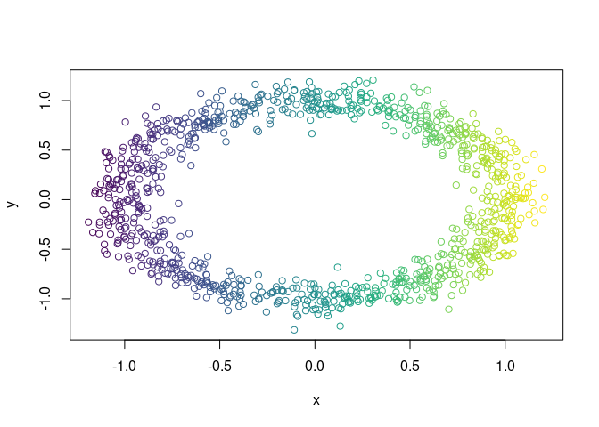
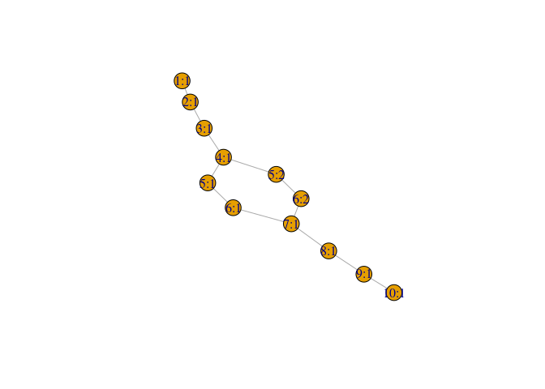
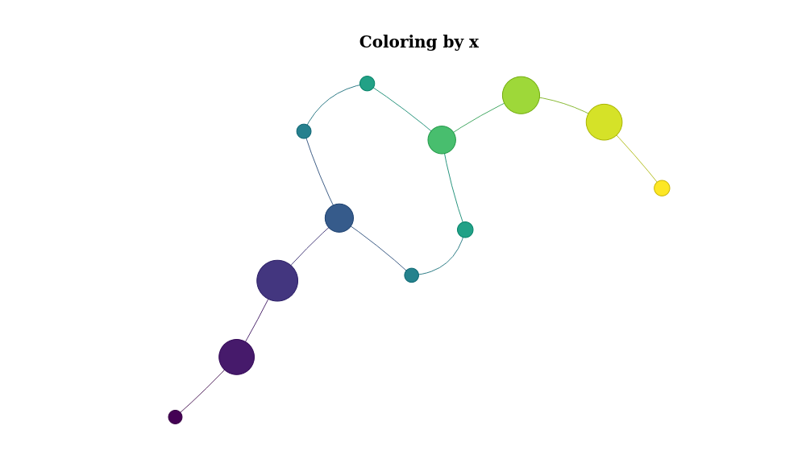
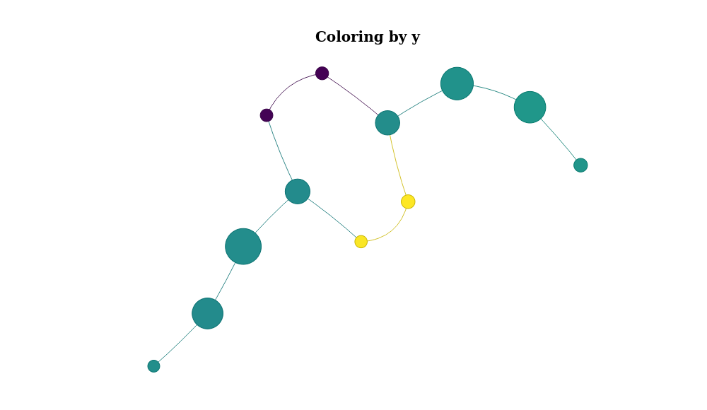

TDAtools provides many functions to help data scientists using TDA.
Installation
You can install the development version of TDAtools from GitHub with:
devtools::install_github("vituri/TDAtools")Notation
Let’s fix some notation:
Xis a data.frame with numeric and, possibly, factor columns. When needed, we select only the numeric columns (like when calculating the distance matrix ofX) and denote it by X. The rows ofXare called observations, and the columns are called variables;f_Xis a vector with one number for each observation ofX. That is:f_Xis the result of applying a filter function f : X → ℝ toX. We provide many filter functions;distance_matrixis a matrix of distances calculated withXOR a function that when applied toXresults in such a matrix
Graph-reducing algorithms
We provide the Mapper algorithm and the Ball-Mapper algorithm. Both return a list consisting of:
a graph with weighted vertices;
a list showing which points of
Xare in each vertex.
See the vignettes for more examples. (to-do)
Examples
Let X be a sample of random points in a noisy circle:
library(TDAtools)
#> Carregando pacotes exigidos: shiny
#> Carregando pacotes exigidos: dplyr
#>
#> Attaching package: 'dplyr'
#> The following objects are masked from 'package:stats':
#>
#> filter, lag
#> The following objects are masked from 'package:base':
#>
#> intersect, setdiff, setequal, union
#> Carregando pacotes exigidos: purrr
#> Carregando pacotes exigidos: ggplot2
X = data.noisy_circle()Let the filter function be the projetion on the x-axis and let color X using it:
f_X = X$x
color_band = ggplot2::cut_interval(f_X, n = 50)
col_vector = viridis::viridis(nlevels(color_band))[as.integer(color_band)]
plot(X, col = col_vector)
Now we embed X in R4:
X$z = 0
X$w = 0and calculate its Mapper Graph:
mp =
mapper(
X = X
,f_X = f_X
)
#> Clustering pullback 1...
#> Clustering pullback 2...
#> Clustering pullback 3...
#> Clustering pullback 4...
#> Clustering pullback 5...
#> Clustering pullback 6...
#> Clustering pullback 7...
#> Clustering pullback 8...
#> Clustering pullback 9...
#> Clustering pullback 10...The result is a list with many objects. For example, the pullback of each interval in the covering:
mp$pullback |> str()
#> List of 10
#> $ 1 : int [1:77] 7 39 58 62 67 68 76 86 89 100 ...
#> $ 2 : int [1:256] 1 2 5 7 10 16 18 19 21 25 ...
#> $ 3 : int [1:303] 1 2 5 9 10 16 17 18 19 21 ...
#> $ 4 : int [1:199] 9 17 23 24 31 33 36 37 41 44 ...
#> $ 5 : int [1:164] 20 29 35 36 37 41 42 43 44 46 ...
#> $ 6 : int [1:180] 3 4 6 11 20 26 29 30 35 42 ...
#> $ 7 : int [1:194] 3 4 6 11 12 15 26 27 30 34 ...
#> $ 8 : int [1:272] 8 12 15 22 27 32 34 38 40 48 ...
#> $ 9 : int [1:262] 8 13 14 22 28 32 38 40 47 49 ...
#> $ 10: int [1:93] 13 14 28 47 61 91 105 108 111 126 ...
#> - attr(*, "class")= chr "AsIs"Let’s plot the mapper graph:

Or, for a better visualization, we use the networkVis package and color the nodes using the mean value of the x variable of X:
mp %>% plot_mapper()
Or color it by y:
mp %>% plot_mapper(data_column = 'y')